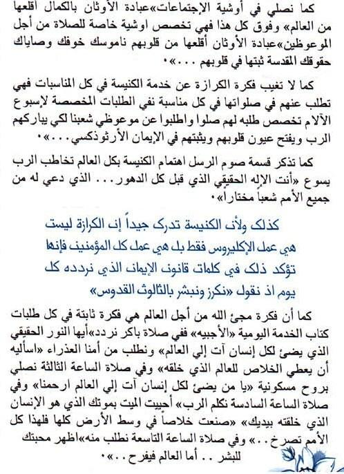

76 البابوية الرسالة المجيد الميالد لعيد 4102 القدس والرح واالبن الآلب بسم جديد عام بداية في المجيد الميالد بعيد أهنئكم 2.24 . في أحد لكل والمحبة والسالم والفرح الخير من المزود وليد بركات للجميع وأتمنى بالدنا في ، مكان كل السيد ميالد تذكار في الميالدية السنة أعياد بأول تحتفل والتي العالم كل في كنائسنا كل وفي مصر المسيح . الحدث هذا في األرض مع السماء فيه إشتركت ،سماوي أرضي وحدث عمل اإللهي التجسد . من وهللا ويأتي يتجسد أن أعطانا للبشر محبته م نعرف كما إلينا يوحنا في ، الصغير اإلنجيل نسميها التي اآلية ن 2 : 25 ( بذل حتى العالم هللا أحب هكذا أبدية حياة لنا تكون بل به يؤمن من كل يهلك ال لكي الوحيد ابنه ) البشر نحو نازلة محبة في قدم الذي هللا ناحية من تالقي كان وألرض السماء بين التالقي هذا . من وأيضا اإلنسان ناحية هللا نحو صاعدة إشتياقات قدم الذي . وفي الكتاب يقول كما الزمان ملئ في التالقي هذا فكان حبه في المسيح يسوع ربنا تجسد حيث العذراء أمنا بطن . فتمم وقيامته صليبه في أما ، الحب هذا على أكد تجسده في ولكن أحد لكل حبه أظهر هللا اإلنسان خلقة في الجارف الحب ، الحب هذا اإلنسان نحو . األرضي المزود عن ونقرأ السماوي النجم عن نقرأ وكثيرة متعدة وهي الميالد زكريات في نحن والحقيقة السن في صغار عن ونقرأ الحدث بقرب كانوا اللذين عن ونقرأ بعيدة بالد من جاءوا اللذين عن ونقرأ ،
St. Markus · 2014 · Deutsch
4102ـ الرسالة البابوية لعيد الميالد المجيد
Ausgabe 1 · Seite 75
